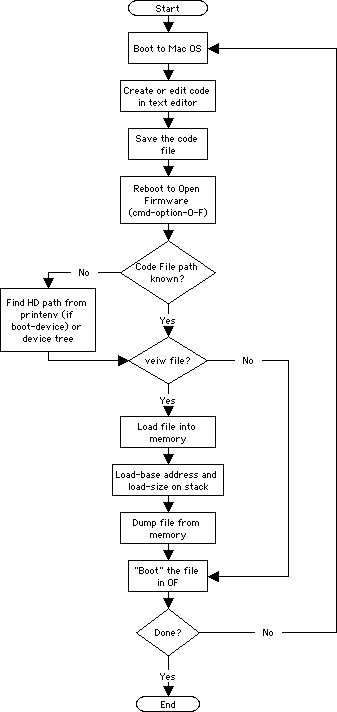

|
|
This Technote describes a method of editing, saving, and
retrieving Open Firmware commands to/from a file
on a "New
World" Macintosh hard drive.
Open Firmware can be a powerful tool for
developing and debugging driver code for add-on
devices, but is limited in its ability to edit and
maintain this code during development.
This Technote provides a single-machine solution
to save and test code development files on an Apple
machine's hard drive. This Note is directed at
device developers who do not have access to a
second machine for two-machine debugging or
prefer to develop code on one machine.
Updated: [Sep 22 2000]
|
Introduction
Developing code for Open Firmware on a single machine is
usually limited to a single session, with that code often
lost once the session has ended. Other developer documents
have suggested that code development uses a two-machine
solution, where actual development of the code is done
outside of the Open Firmware environment on a second
machine. Although preferred, two-machine mode is not
always practical.
File transfer can be accomplished using a single
machine's hard drive as a common storage area between the OS
and Open Firmware. Editing and saving code in the OS
environment yields all the benefits of word processing and
file management. Retrieving and running files in Open
Firmware has the benefit of working from the same code,
without the need for retyping that code each session.
Using this method, development becomes a cycle of
developing and saving code in the OS, restarting the machine
in Open Firmware, locating the code file in Open Firmware,
loading the file and either viewing or "booting" the
file.
For the sake of brevity, this method assumes that
development system's hard drive is also the boot drive
containing Mac OS. In this example, the boot drive is easily
identified if the node has a device alias. This limits the
need to identify the hard drive in the device tree and type
lengthy node names to access the hard drive.
Back to top
Developing Open Firmware code in one-machine mode
Creating and editing Open Firmware code, as it applies to
this method, is accomplished in the Mac OS environment,
using any text editor or word processor that will save files
in a standard text format (i.e., without font, style, or
special format information).
Code can be written, using the text editor, as it would
be entered in the Open Firmware environment -- with one
exception. The first line of the document MUST be an Open
Firmware comment, followed by a carriage return
(<cr>).
Back to top
Creating and Editing a File in MacOS
The example text file below was created in using the
SimpleText application on a PowerMac G4, in Mac OS
9.0.4.
Note that the first line is an Open Firmware comment.
This example should execute as follows in Open
Firmware:
- Provide some visual formatting on the OF screen with
some carriage returns
- Print a "Hello" message
- Select the root directory in the device tree
- Do some more formatting for the OF screen
- Print the current working directory
- Display the device tree
- Print a formatted header for
s
- Display the properties of the root node
Example 1. A simple OF source code
file created in SimpleText.
\ comment
cr
." hello Open Firmware "
dev /
cr cr
pwd ." = current working directory"
cr
ls
cr cr
." *** Properties ***"
cr
.properties
\ end of file comment ... so I can locate the end!
|
Although the code in Example 1 meets the criteria for
Open Firmware FORTH code, it will immediately run once when
booted and has very limited ability for modification (if
any) in the Open Firmware environment.
Another approach that lends itself to fewer transitions between
editing cycles in the OS and testing cycles in Open
Firmware would be to use colon definitions for functions in
the code file.
Example 2. A simple OF source code
file using colon definitions.
\ This is a file that contains some colon defined, formatted,
\ commonly used, basic Open Firmware functions.
." vv = hello & select root (dev /) " cr
." xx = formatted directory (pwd) " cr
." yy = key controlled dev tree list (ls) " cr
." zz = formatted property list (.properties) " cr
: hello ( -- ) cr ." Hello Open Firmware" ;
: slctroot ( -- ) " ... selecting 'root' " cr ;
: scrl-start ( -- ) cr ." press Control-Q to start scrolling" ;
: scrl-stop ( -- ) cr ." press Control-S to stop scrolling" ;
: wt-4-key ( -- ) cr ." press an key to continue ... " key clear ;
: vv ( -- ) hello slctroot clear " /" find-device ;
: xx ( -- ) cr cr ." " pwd ." = current working directory" ;
: yy ( -- ) cr scrl-start scrl-stop cr wt-4-key ls ;
: zz ( -- ) cr cr ." *** Properties ***" cr .properties ;
\ end of file comment ... so I can locate the end!
|
In Example 2, the code will load but not run immediately
when booted in Open Firmware. Instead, the colon
definitions will be added to the dictionary and can be
called as needed in the OF environment. Some level of
editing can now be maintained in Open Firmware by
redefining one or all of the colon definitions.
The SimpleText application saves the file as a standard
text file by default. Other word processors may require you
to choose a "text" option under a "Save as ..." menu option.
It is an obvious but important step to provide a memorable
name for the file when saving the file. Providing a simple
and memorable name for the file makes it easier to locate in
Open Firmware.
It can save some time and typing in the Open Firmware
environment if the file is saved at the root level on the
primary (or boot) hard drive. (Remember, the desktop is not
the root level.) Saving to the root hard drive (or a folder
on the root hard drive) will make the search and path to the
file simpler.
For these examples, it is also important choose a hard
drive in the "Startup Disk" control panel with in MacOS
prior to entry into Open Firmware. This ensures that there
is a known boot-device in Open Firmware.
Once the file has been created, edited and saved, the
machine should be restarted and brought up into Open
Firmware (by holding down the Command-Option-O-F keys at
boot time).
Back to top
Finding Files in Open Firmware
Finding files on the machines hard drive in Open Firmware
requires two steps:
- Identify the current hard drive path in the device
tree, and
- Find the OF code file (created in the OS) on the hard
drive.
Identifying the Current hard drive Path
Using the printenv word in Open Firmware will reveal the
hard drive path for the machine's boot device.
Note that in the example below that the "boot-device" is
currently "hd:", which is assumed for this type of single
machine development cycle.
Example 3. A simple OF source code file created in SimpleText.
0 > printenv
-------------- Partition: common -------- Signature: 0x70 ---------------
little-endian? false false
real-mode? false false
auto-boot? true true
diag-switch? false false
fcode-debug? false false
oem-banner? false false
oem-logo? false false
use-nvramrc? false false
use-generic? false false
default-mac-address? false false
real-base -1 -1
real-size -1 -1
load-base 0x800000 0x800000
virt-base -1 -1
virt-size -1 -1
pci-probe-mask -1 -1
screen-#columns 100 100
screen-#rows 40 40
selftest-#megs 0 0
boot-device hd:,\\:tbxi hd:,\\:tbxi
boot-file
boot-screen
console-screen
diag-device enet enet
diag-file ,diags ,diags
input-device keyboard keyboard
output-device screen screen
input-device-1 scca scca
output-device-1 scca scca
mouse-device mouse mouse
oem-banner
oem-logo
nvramrc
boot-command mac-boot mac-boot
default-client-ip
default-server-ip
default-gateway-ip
default-subnet-mask
default-router-ip
boot-script
aapl,pci Use PRINT-AAPL,PCI to view
ASVP 30313037 31373030 31373030
ok
|
In Example 3 above, we obtained the path to the machine's
hard drive (hd:). Clearly, "hd" is a device alias in this
case. The "long hand" path name can be obtained by using the
devalias word.
Example 4 shows the full path name for "hd".
In this case, it also shows that "ultra0" is a devalias
for the hard drive.
Example 4. Using devalias to show the full name.
0 > devalias
pci0 /pci@f0000000
agp /pci@f0000000
pci1 /pci@f2000000
pci2 /pci@f4000000
bridge /pci@f2000000/@d
pci /pci@f2000000/@d
fwx /pci@f2000000/@d/firewire@a
enetx /pci@f2000000/@d/ethernet@b
enet1 /pci@f2000000/@d/ethernet
fw1 /pci@f2000000/@d/firewire
cb /pci@f2000000/@d/cardbus@1a
magma /pci@f2000000/@d/cardbus@1a/pci-bridge/pci-bridge
usb0 /pci@f2000000/@d/usb@8
usb1 /pci@f2000000/@d/usb@9
mac-io /pci@f2000000/@d/mac-io@7
mpic /pci@f2000000/@d/mac-io@7/interrupt-controller
ide0 /pci@f2000000/@d/mac-io@7/ata-3@20000/disk@0
ide1 /pci@f2000000/@d/mac-io@7/ata-3@20000/disk@1
hd /pci@f2000000/@d/mac-io@7/ata-4@1f000/disk@0
cd /pci@f2000000/@d/mac-io@7/ata-3@20000/disk@0
zip /pci@f2000000/@d/mac-io@7/ata-3@20000/disk@1
ultra0 /pci@f2000000/@d/mac-io@7/ata-4@1f000/disk@0
ultra1 /pci@f2000000/@d/mac-io@7/ata-4@1f000/disk@1
scca /pci@f2000000/@d/mac-io@7/escc/ch-a
sccb /pci@f2000000/@d/mac-io@7/escc/ch-b
ki2c /pci@f2000000/@d/mac-io@7/i2c
ki2c-serial /pci@f2000000/@d/mac-io@7/i2c/cereal
via-pmu /pci@f2000000/@d/mac-io@7/via-pmu
rtc /pci@f2000000/@d/mac-io@7/via-pmu/rtc
adb /pci@f2000000/@d/mac-io@7/via-pmu/adb
adb-keyboard /pci@f2000000/@d/mac-io@7/via-pmu/adb/keyboard
adb-mouse /pci@f2000000/@d/mac-io@7/via-pmu/adb/mouse
wireless /pci@f2000000/@d/mac-io@7/@30000
ui2c /uni-n/i2c
ui2c-serial /uni-n/i2c/cereal
enet /pci@f4000000/ethernet
fw /pci@f4000000/firewire
keyboard /pseudo-hid/keyboard
mouse /pseudo-hid/mouse
nvram /nvram
last-boot /pci@f4000000/ethernet@f
screen /pci@f0000000/ATY,Rage128Ps@10
ok
|
Finding the OF Code File on the hard drive.
Finding the OF code file that was created in the OS
environment requires the use of the word dir in
Open Firmware.
dir is similar in use to the directory
command in many command line, disk-based operating systems.
The stack comment for dir is in the following form.
dir ( "device-specifier<eol>" -- )
Where the "device-specifier" is the hard drive path.
In this case the "device-specifier" requires a bit more
explanation.
The exact stack input required for dir is as
follows:
hard drive device
path:hard drive
directory path
dir returns the contents of the current working
directory for the hard drive path specified.
Example 5 shows the use of the dir word to find
the OF code file. Here, after the word dir, "hd" is the
devalias for the device path of the hard drive determined in
Examples 3 and 4.
The back slash character ("\") is the symbol for the
"root" directory for the hard drive directory path. Note it
that it is on the right hand side the colon (":") separator
in the dir word example below.
Example 5. Examining the hard drive's directory via dir.
0 > dir hd:\
117820 4/ 7/ 0 23:43:38 1DIMM
124280 4/ 7/ 0 23:37:19 2DIMM
6/ 2/ 0 15:10: 0 Anarchie%203.7
3824 6/ 2/ 0 15:10: 0 Anarchie%203.7%20Installer%20Log%20File
68539 6/ 7/ 0 14:39:21 Apple%20CPU%20Plugins
6/ 5/ 0 20:56: 2 Apple%20Extras
159744 6/24/ 0 0:30:15 AppleShare%20PDS
6/ 5/ 0 20:31:29 Applications
6/ 5/ 0 20:33:18 Assistants
158 6/ 6/ 0 0:45:34 Auth.bak%0a
8/17/ 0 22:26:24 Cleanup%20At%20Startup
6/ 5/ 0 23:51:33 Cubase%204.1
319488 8/24/ 0 15:32:41 Desktop%20DB
1652242 8/24/ 0 15:31:58 Desktop%20DF
8/25/ 0 18:55:36 Desktop%20Folder
167 8/25/ 0 22:36: 2 devtree_OF
5/ 3/ 0 0: 1: 3 Echo%20Card%20Folder
6/ 5/ 0 16:15:18 firewire
6/16/ 0 17:23:50 ImageMate3_A%20folder
6/ 5/ 0 20:26: 4 Installer%20Logs
6/ 5/ 0 20:33:18 Internet
0 6/ 5/ 0 20:31:27 Late%20Breaking%20News
6/15/ 0 20:50: 0 Sys%20folders
8/24/ 0 15:49:46 Temporary%20Items
6/ 6/ 0 7: 0:44 TheFindByContentFolder
6/ 5/ 0 21: 4:29 TheVolumeSettingsFolder
2/ 2/ 4 10:12:38 Trash
287 6/ 5/ 0 23:59:30 USB%20Floppy%20Enabler%20Install%20Log
9549 10/24/99 7: 0: 0 USB%20Floppy%20Enabler%20READ%20ME
6/ 5/ 0 20:27:30 Utilities
6/ 5/ 0 20:33:39 Web%20Pages
6/24/ 0 0:13:45 %uffe5%uffe5%uffe5%20HFS%20Private%20Meta%20Data ok
0 >
|
Since the OF code file was conveniently stored in the
root directory of the hard drive, it appears in the 16th
line of the directory as "167 8/25/ 0
22:36: 2 devtree_OF". Had the code file been in a
folder on the hard drive, the search would have required
longer directory path name on the right had side of the
colon (containing the name of the folder) as in Example
6.
Example 6. Finding a file below the root directory of the hard
drive.
0 > dir hd:\
117820 4/ 7/ 0 23:43:38 1DIMM
124280 4/ 7/ 0 23:37:19 2DIMM
6/ 2/ 0 15:10: 0 Anarchie%203.7
3824 6/ 2/ 0 15:10: 0 Anarchie%203.7%20Installer%20Log%20File
68539 6/ 7/ 0 14:39:21 Apple%20CPU%20Plugins
6/ 5/ 0 20:56: 2 Apple%20Extras
159744 6/24/ 0 0:30:15 AppleShare%20PDS
6/ 5/ 0 20:31:29 Applications
6/ 5/ 0 20:33:18 Assistants
158 6/ 6/ 0 0:45:34 Auth.bak%0a
8/17/ 0 22:26:24 Cleanup%20At%20Startup
6/ 5/ 0 23:51:33 Cubase%204.1
319488 8/24/ 0 15:32:41 Desktop%20DB
1652242 8/24/ 0 15:31:58 Desktop%20DF
8/25/ 0 22:59:53 Desktop%20Folder
210 8/25/ 0 22:49:15 devtree_OF
5/ 3/ 0 0: 1: 3 Echo%20Card%20Folder
6/ 5/ 0 16:15:18 firewire
6/16/ 0 17:23:50 ImageMate3_A%20folder
6/ 5/ 0 20:26: 4 Installer%20Logs
6/ 5/ 0 20:33:18 Internet
0 6/ 5/ 0 20:31:27 Late%20Breaking%20News
8/25/ 0 18:55:44 OFfolder
6/15/ 0 20:50: 0 Sys%20folders
8/24/ 0 15:49:46 Temporary%20Items
6/ 6/ 0 7: 0:44 TheFindByContentFolder
6/ 5/ 0 21: 4:29 TheVolumeSettingsFolder
2/ 2/ 4 10:12:38 Trash
287 6/ 5/ 0 23:59:30 USB%20Floppy%20Enabler%20Install%20Log
9549 10/24/99 7: 0: 0 USB%20Floppy%20Enabler%20READ%20ME
6/ 5/ 0 20:27:30 Utilities
6/ 5/ 0 20:33:39 Web%20Pages
6/24/ 0 0:13:45 %uffe5%uffe5%uffe5%20HFS%20Private%20Meta%20Data
ok
0 > dir hd:\OFfolder
156 8/26/ 0 1:41:43 devtree_test ok
ok
|
In Example 6 above, searching the root directory using
dir reveals a folder named "OFfolder."
A second dir containing the name of this folder reveals a
single test file as it's contents.
Back to top
Viewing Files
Viewing the text in a saved file on a hard drive can be
accomplished using the load, load-base, load-size and
dump words.
The sequence of events is as follows:
- Load the OF code file from the hard drive into
memory
- Get the base address of the file in memory and place
it on the stack
- Get the size of the file and place it on the
stack
- Dump the file to the OF screen.
The load word follows the same syntax as dir
above except that it requires the OF code file name as
well.
Example 7 below, shows the syntax and result of
load for the file "devtree_OF".
Example 7. Loading an OF code file from the hard drive into
memory.
0 > load hd:\devtree_OF load-size=378 adler32=15900efd
ok
|
Note that execution of load displays the load (or
file) size, but not the load address.
Conveniently, two words provide the functions
needed for dump.
load-base provides the address of last file loaded
using load and places it on the stack.load-size provides the size (in bytes + 1) of last
file loaded using load and places it on the stack.
The dump word displays the contents of the file
in memory in both hex and ASCII characters.
Example 8 below, the use and load-base and
load-address in preparation for dump. dump then
provides a view of the "devtree_OF" file in memory.
Example 8. "dumping OF
code file in memory to the OF screen.
0 > load-base ok
1 > load-size ok
2 > .s 800000 378
ok
2 > dump
00800000: 5c 20 54 68 69 73 20 69 73 20 61 20 66 69 6c 65 :\ This is a file:
00800010: 20 74 68 61 74 20 63 6f 6e 74 61 69 6e 73 20 73 : that contains s:
00800020: 6f 6d 65 20 63 6f 6c 6f 6e 20 64 65 66 69 6e 65 :ome colon define:
00800030: 64 2c 20 66 6f 72 6d 61 74 74 65 64 2c 20 0d 5c :d, formatted, .\:
00800040: 20 20 63 6f 6d 6d 6f 6e 6c 79 20 75 73 65 64 2c : commonly used,:
00800050: 20 62 61 73 69 63 20 4f 70 65 6e 20 46 69 72 6d : basic Open Firm:
00800060: 77 61 72 65 20 66 75 6e 63 74 69 6f 6e 73 2e 0d :ware functions..:
00800070: 0d 2e 22 20 76 76 20 3d 20 68 65 6c 6c 6f 20 26 :.." vv = hello &:
00800080: 20 73 65 6c 65 63 74 20 72 6f 6f 74 20 28 64 65 : select root (de:
00800090: 76 20 2f 29 20 22 20 63 72 0d 2e 22 20 78 78 20 :v /) " cr.." xx :
008000a0: 3d 20 66 6f 72 6d 61 74 74 65 64 20 20 64 69 72 := formatted dir:
008000b0: 65 63 74 6f 72 79 20 28 70 77 64 29 20 22 20 63 :ectory (pwd) " c:
008000c0: 72 0d 2e 22 20 79 79 20 3d 20 6b 65 79 20 63 6f :r.." yy = key co:
008000d0: 6e 74 72 6f 6c 6c 65 64 20 64 65 76 20 74 72 65 :ntrolled dev tre:
008000e0: 65 20 6c 69 73 74 20 28 6c 73 29 20 20 22 20 63 :e list (ls) " c:
008000f0: 72 0d 2e 22 20 7a 7a 20 3d 20 66 72 6f 6d 61 74 :r.." zz = format:
00800100: 74 65 64 20 70 72 6f 70 65 72 74 79 20 6c 69 73 :ted property lis:
00800110: 74 20 28 2e 70 72 6f 70 65 72 74 69 65 73 29 20 :t (.properties) :
00800120: 22 20 63 72 0d 0d 3a 20 68 65 6c 6c 6f 20 28 20 :" cr..: hello ( :
00800130: 2d 2d 20 29 20 20 63 72 20 2e 22 20 20 48 65 6c :-- ) cr ." Hel:
00800140: 6c 6f 20 4f 70 65 6e 20 46 69 72 6d 77 61 72 65 :lo Open Firmware:
00800150: 22 20 3b 0d 3a 20 73 6c 63 74 72 6f 6f 74 20 28 :" ;.: slctroot (:
00800160: 20 2d 2d 20 29 20 20 22 20 20 2e 2e 2e 20 73 65 : -- ) " ... se:
00800170: 6c 65 63 74 69 6e 67 20 27 72 6f 6f 74 27 20 22 :lecting 'root' ":
00800180: 20 20 63 72 20 3b 0d 3a 20 73 63 72 6c 2d 73 74 : cr ;.: scrl-st:
00800190: 61 72 74 20 28 20 2d 2d 20 29 20 20 63 72 20 20 :art ( -- ) cr :
008001a0: 2e 22 20 70 72 65 73 73 20 63 6f 6e 74 72 6f 6c :." press control:
008001b0: 2d 71 20 74 6f 20 73 74 61 72 74 20 73 63 72 6f :-q to start scro:
008001c0: 6c 6c 69 6e 67 22 20 3b 0d 3a 20 73 63 72 6c 2d :lling" ;.: scrl-:
008001d0: 73 74 6f 70 20 28 20 2d 2d 20 29 20 20 63 72 20 :stop ( -- ) cr :
008001e0: 2e 22 20 70 72 65 73 73 20 63 6f 6e 74 72 6f 6c :." press control:
008001f0: 2d 73 20 74 6f 20 73 74 6f 70 20 73 63 72 6f 6c :-s to stop scrol:
00800200: 6c 69 6e 67 22 20 3b 0d 3a 20 77 74 2d 34 2d 6b :ling" ;.: wt-4-k:
00800210: 65 79 20 28 20 2d 2d 20 29 20 20 63 72 20 2e 22 :ey ( -- ) cr .":
00800220: 20 70 72 65 73 73 20 61 6e 20 6b 65 79 20 74 6f : press an key to:
00800230: 20 63 6f 6e 74 69 6e 75 65 20 2e 2e 2e 20 22 20 : continue ... " :
00800240: 20 6b 65 79 20 20 63 6c 65 61 72 20 3b 0d 0d 3a : key clear ;..::
00800250: 20 76 76 20 28 20 2d 2d 20 29 20 68 65 6c 6c 6f : vv ( -- ) hello:
00800260: 20 73 6c 63 74 72 6f 6f 74 20 63 6c 65 61 72 20 : slctroot clear :
00800270: 22 20 2f 22 20 66 69 6e 64 2d 64 65 76 69 63 65 :" /" find-device:
00800280: 20 20 3b 20 20 0d 0d 3a 20 78 78 20 28 20 2d 2d : ; ..: xx ( --:
00800290: 20 29 20 20 63 72 20 63 72 20 2e 22 20 20 22 20 : ) cr cr ." " :
008002a0: 70 77 64 20 2e 22 20 20 20 3d 20 63 75 72 72 65 :pwd ." = curre:
008002b0: 6e 74 20 77 6f 72 6b 69 6e 67 20 64 69 72 65 63 :nt working direc:
008002c0: 74 6f 72 79 22 20 3b 0d 0d 3a 20 79 79 20 28 20 :tory" ;..: yy ( :
008002d0: 2d 2d 20 29 20 63 72 20 73 63 72 6c 2d 73 74 61 :-- ) cr scrl-sta:
008002e0: 72 74 20 73 63 72 6c 2d 73 74 6f 70 20 63 72 20 :rt scrl-stop cr :
008002f0: 77 74 2d 34 2d 6b 65 79 20 6c 73 20 20 20 3b 0d :wt-4-key ls ;.:
00800300: 0d 3a 20 7a 7a 20 28 20 2d 2d 20 29 20 63 72 20 :.: zz ( -- ) cr :
00800310: 63 72 20 2e 22 20 2a 2a 2a 20 50 72 6f 70 65 72 :cr ." *** Proper:
00800320: 74 69 65 73 20 2a 2a 2a 22 20 63 72 20 2e 70 72 :ties ***" cr .pr:
00800330: 6f 70 65 72 74 69 65 73 20 3b 0d 0d 5c 20 65 6e :operties ;..\ en:
00800340: 64 20 6f 66 20 66 69 6c 65 20 63 6f 6d 6d 65 6e :d of file commen:
00800350: 74 20 2e 2e 2e 20 73 6f 20 49 20 6b 6e 6f 77 20 :t ... so I know :
00800360: 49 20 68 61 76 65 20 65 6e 6f 75 67 68 20 3c 63 :I have enough <c:
00800370: 72 3e 27 73 20 21 0d 0d :r>'s !..: ok
0 >
|
Note two things in Example 8 above.
- Using
load-base and load-size do not require you
to ever know what values were loaded on the stack. ".s"
was used in this example to show the stack contents prior
to using dump. The number on the top of the stack
{provided by load-size) matches the load-size value displayed in Example 7.
- The ASCII text, displayed to the right of the colon
on each line, matches the text from the file in Example 1
(although no formatting is shown).
Back to top
Running Files
The primary goal of this session is to be able to
run the code created in the OS from the Open Firmware
environment.
Running a file from the hard drive can be
accomplished using the boot word.
The boot word follows the same syntax as load
above and requires the hard drive paths as well as the OF
code file name.
Example 9 below, shows the syntax and result of
boot for the file "devtree_OF" from Example 2.
Example 9. Running an OF
code file from the hard drive.
0 > boot hd:\devtree_OF load-size=378 adler32=15900efd
evaluating Forth source
vv = hello & select root (dev /)
xx = formatted directory (pwd)
yy = key controlled dev tree list (ls)
zz = formatted property list (.properties)
ok
0 > vv
Hello Open Firmware ... selecting 'root'
ok
0 > xx
/ = current working directory ok
0 > zz
*** Properties ***
model PowerMac3,1
compatible PowerMac3,1
MacRISC
Power Macintosh
serial-number HNZM7824LL/B
XB002027
customer-sw-config
color-code ffff
scb# 00000000
name device-tree
copyright Copyright 1983-1999 Apple Computer, Inc. All Rights Reserved
device_type bootrom
system-id 0000000000000
#address-cells 00000001
#size-cells 00000001
clock-frequency 05f03e4d
AAPL,add-fcode-file ff81cfe0
ok
0 > xx
/ = current working directory ok
0 > yy
press Control-Q to start scrolling
press Control-S to stop scrolling
press an key to continue ...
ff83b630: /cpus
ff83b860: /PowerPC,G4@0
ff83bbd8: /l2-cache
ff83c6f8: /chosen
ff83c888: /memory@0
ff83caa0: /openprom
ff83cbd0: /client-services
ff83dd70: /rom@ff800000
ff83def8: /boot-rom@fff00000
|
The Control-S keys were pressed to abbreviate the
device tree listing example above.
Note that if the file name and path are known and
the file does not need to be viewed in Open firmware, then
the boot word (with the path/filename) becomes the only
word needed to run the file in the Open Firmware
session.
Back to top
Summary
Open Firmware code development can be accomplished on a
single machine by alternately creating, editing, and saving a
standard text file in Mac OS to the hard drive, then
locating, loading, viewing, and booting the same file on the
hard drive from Open Firmware.
Figure 1 below demonstrates a typical Open
Firmware debugging session in one-machine mode.
One-Machine Debug Flow

|
Figure 1. A typical Open Firmware debugging
session in one-machine mode.
|
References
IEEE 1275-1994 Specification
Conklin, Edward and Rather, Elizabeth. 1998, Forth
Programmer's Handbook. FORTH In. Publications
Technote
1061 - Open Firmware: The User Interface, Part I in
the Open Firmware Technote Series
Technote
1167 - NewWorld Architecture
Apple Computer. 2000, Power
Mac G4 computer developer note.
Back to top
Downloadables
|

|
Acrobat version of this Note (236K)
|
Download
|
Back to top
|